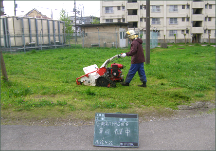
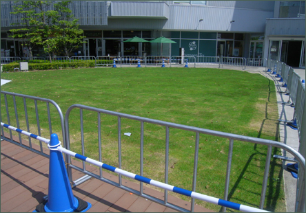
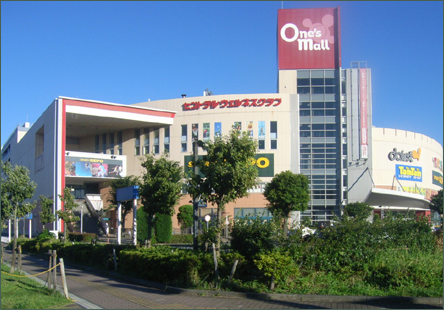
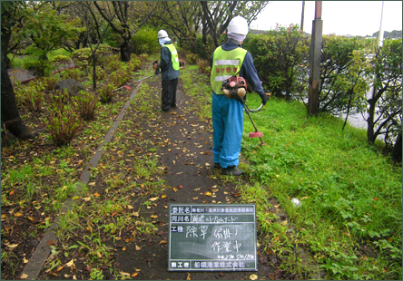
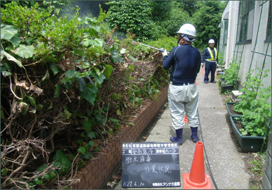
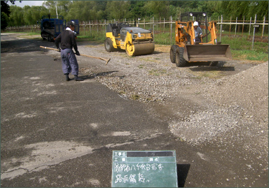

施工模様の紹介
施工模様の紹介
-
防衛省宿舎共有部緑地整備作業
千葉県八千代市に在る防衛省宿舎、その共有緑地の整備模様。定期的なメンテナンスを行う事で年間を通して芝生や 樹木を最良な状態に維持。と、共に景観の維持及び改修を行う事で居住者が気持ち良く過ごせる空間を提供しています。

-
ららぽーと豊洲エントランス緑地管理作業
定期メンテナンス案件で在る大型商業施設ららぽーと豊洲、その憩いの場として広い敷地面積を誇る中庭エントランス。沢山の来客者や従業員の眼に多く触れるエリアでも在ります、その共有緑地スペースの再施工や整備の模様です。

-
ワンズモール正面入口エントランス緑地管理作業
千葉県においては重要な主要道路として知られる国道１６号線、その国道沿いに展開する大型商業施設ワンズモール。付近には住宅街も広がり、商業施設と住宅地の関わりも深いロケーション。最初に目にする正面エントランスの共有緑地の整備施工後の模様です。

-
海老川プロムナード除草及び整備作業
スタジオ縁が事務所を構える千葉県船橋市、その船橋市民には非常に馴染みの深い海老川。季節毎の祭事やイベントは元より生活道路としても使用されるプロムナードの緑地整備も行っています、写真は除草整備作業の模様と成ります。

-
京葉道路緑地帯樹木管理作業
生活用として、商業用として、多岐に渡る移動と運輸を司る高速道路。その防音壁や道路沿いの緑地整備には除草などの他に樹木への消毒作業なども含まれます、沢山の人の眼に触れる場所ですから定期的なメンテナンスはとても重要なファクターです。

-
防衛省宿舎路面舗装工事
私達スタジオ縁は緑化提案や一般的な造園業と共に、その業務に付随する関連事業にも力を入れています。その一つに舗装や舗装改修などの施工も含まれています、緑化や緑地整備と共に隣接する区画をトータル的にメンテナンスしています。
